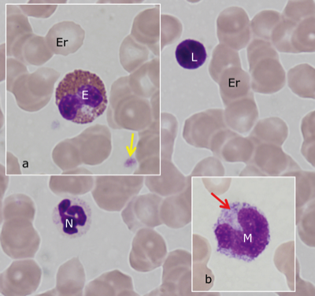
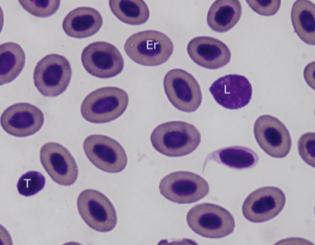

Bloed
Bloed bestaat uit bloedplasma en bloedcellen. De procentuele verhouding tussen het volume bloedcellen en het plasma in een gecentrifugeerd bloedstaal is het hematocriet.
Om bloed te bestuderen wordt meestal gebruik gemaakt van een uitstrijkje. Hiervoor wordt een druppel bloed over een draagglaasje uitgespreid, aan de lucht gedroogd, gefixeerd en vervolgens gekleurd. In de klinische diagnostiek wordt vaak gebruik gemaakt van de May-Grünwald-Giemsa kleuring, een zogenaamde ‘differentieelkleuring’ omdat ze mogelijk maakt om te differentiëren tussen de verschillende bloedceltypes. De ‘vloeistof’ (= bloedplasma) zie je niet met deze methode, de cellen wél.
In een bloeduitstrijkje vinden we rode bloedcellen, witte bloedcellen en bloedplaatjes, waarbij rode bloedcellen (= erythrocyten) het talrijkst aanwezig zijn (±5 x 109/ml bij de mens). Bij de meeste zoogdieren zijn erythrocyten kleine biconcave schijfjes zonder kern (±7 µm bij de mens). Aangezien ze vol zitten met hemoglobine (een basisch eiwit) zullen erythrocyten roze aankleuren met de zure kleurstof eosine. Erythrocyten van andere dierenklassen zijn gekernd.
Bij witte bloedcellen (= leukocyten) tref je steeds een celkern aan die met de May-Grünwald-Giemsa kleuring donkerpaars gekleurd is. Leukocyten maken slechts 1% van het totale bloedvolume (5-10 x 106/ml bij de mens) uit en worden onderverdeeld in granulocyten en agranulocyten.
Granulocyten hebben een diameter van 12 tot 15 µm en een gelobde of gesegmenteerde kern. Omdat de celkern sterk in vorm kan variëren spreken we over polymorfonucleaire leukocyten. Hun belangrijkste kenmerk is de aanwezigheid van granulen in het cytoplasma, die de basis vormen voor de verdere onderverdeling door hun verschil in kleurbaarheid.
De grootste groep (60-70% van de leukocyten bij de mens) zijn de neutrofielen. De gesegmenteerde kern bestaat uit 2 tot 5 lobjes die met elkaar verbonden zijn door zeer dunne ‘chromatinebruggen’. Neutrofielen bevatten in hun granulen zowel zure als basische stoffen die weinig kleurbaar zijn, zodat ze na kleuring een zeer licht zalmroze (= neutraal) uitzicht hebben.
Bij eosinofielen (die o.a. het basische eiwit ‘major basic protein’ bevatten) zullen de granulen aangekleurd worden met eosine (vandaar de naam) en een baksteenrode kleur hebben. Typisch voor eosinofielen is de tweelobbige kern. Ze zijn minder talrijk (2-4% van de leukocyten bij de mens) dan de neutrofielen.
Basofielen zijn veruit de zeldzaamste granulocyten (0.2-1% van de leukocyten). Hun nucleus is gewoonlijk tweelobbig. De ruwe granulen in het cytoplasma zijn sterk basofiel en donkerpaars gekleurd, vaak zo intens dat de kern gemaskeerd wordt.
Agranulocyten zijn mononucleair (= met 1 kern die rond tot nier-vormig is). Monocyten zijn de grootste witte bloedcellen (12-20 µm; 3-8% van de leukocyten), en bezitten een grote kern die nier- of hoefijzervormig is. Het cytoplasma is licht basofiel. Lymfocyten zijn kleine (6-9 µm) ronde cellen met erg weinig cytoplasma. Zij zijn de talrijkste soort agranulocyten (20-30% van de leukocyten).
Bij zoogdieren zijn de bloedplaatjes of trombocyten kleine (2-5 μm), kernloze, schijfvormige celfragmenten. Zij zijn betrokken bij de vorming van bloedstolsel (= trombus). Bij andere dierenklassen (zoals bij vissen en vogels) hebben trombocyten wel een kern. De percentages een bloedcellen en de morfologie verschilt tussen de diersoorten.

Overzichtsfoto van een uitstrijkje van humaan bloed gekleurd met May-Grünwald Giemsa. De meeste cellen in het beeld zijn erythrocyten (Er). De neutrofiel (N) kan je duidelijk herkennen aan de gesegmenteerde kern en het lichte cytoplasma. De monocyt (M) en lymfocyt (L) behoren tot de groep van mononucleaire leukocyten. Inset a: Een eosinofiel (E) tussen een aantal erythrocyten (Er). Merk op dat zowel het cytoplasma van de erythrocyt als de grana van de eosinofiel aankleuren met eosine. De kleine brokjes (gele pijl) zijn trombocyten. Inset b: een monocyt is de grootste leukocyt. Merk het randje basofiel cytoplasma op bij de monocyt (rode pijl).

Overzichtsfoto van een uitstrijkje van vissenbloed. Erythrocyten (Er) en trombocyten (T) zijn hier gekernd. Merk de lymfocyt (L) op.
Sluit dit venster en ga terug naar het zelfstudiepakket